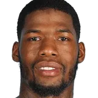

His teams won one title, with the 2015-16 Cleveland Cavaliers. In his 890 games for 6 teams over 13 seasons they went 439–451 (49.3%), −12 games under .500, with an average final finish of 16.3. The biggest one-season rise in his career: the Portland Trail Blazers went from #18 in 2007-08 to #9 in 2008-09.
Jump to: Record by opponent · Season by season · Teammate help
Compare Channing Frye with…
Suggested, same era and similar teammate help:


Final NBA finish, season by season
Title Finals Other playoffs Missed playoffs. #1 = champion; the dashed line is last place that season. Each point opens that season's final standings.
All 30 teams ranked in 2017-18, his best finish (#2)Teammate help
 LeBron James10.52 seasons
LeBron James10.52 seasons- Brandon Roy5.02 seasons
 Steve Nash5.02 seasons
Steve Nash5.02 seasons
Career
Career records (W–L, W − L, with and without) include 2026-27 games through Nov. 19, 2026; season counts and finishes are through 2025-26. Each card opens its board in the same scope. How we count.

Latest completed seasons
- 2018-19·
 Cleveland·#28 of 3019–63 · Missed playoffs
Cleveland·#28 of 3019–63 · Missed playoffs - 2017-18·Cleveland·#2 of 3050–32 · Lost in the NBA Finals 0–4 to
 Golden State
Golden State - 2016-17·Cleveland·#2 of 3051–31 · Lost in the NBA Finals 1–4 to Golden State
Season by season
Newest first; every header sorts. Final NBA finish is the team's rank among all teams that season (#1 = champion) and opens that season's standings. "Without him" uses the team-season window; the span line counts only the games between his first and last game for the team.
| 2018-19 | #28 of 30 | 19–63 23.2% | Missed playoffs | 36 of 82 | 7–29 19.4% | 12–34 26.1%span: 12–30, gap −9.1 | −6.6 | |
| 2017-18 | #2 of 30 | 50–32 61.0% | Lost Finals 0–4 | 44 of 82 | 27–17 61.4% | 7–5 58.3%span: 3–5, gap +23.9 | +3.0 | |
| 2017-18 | #21 of 30 | 35–47 42.7% | Missed playoffs | 9 of 82 | 1–8 11.1% | 12–8 60.0%span: 10–7, gap −47.7 | −48.9 | |
| 2016-17 | #2 of 30 | 51–31 62.2% | Lost Finals 1–4 | 74 of 82 | 44–30 59.5% | 7–1 87.5%span: 7–1, gap −28.0 | −28.0 | |
| 2015-16 | #20 of 30 | 35–47 42.7% | Missed playoffs | 44 of 82 | 20–24 45.5% | 4–6 40.0%span: 3–2, gap −14.5 | +5.5 | |
| 2015-16 | #1 of 30 | 57–25 69.5% | Title 4–3 | 26 of 82 | 15–11 57.7% | 5–0 100.0%span: 2–0, gap −42.3 | −42.3 | |
| 2014-15 | #26 of 30 | 25–57 30.5% | Missed playoffs | 75 of 82 | 23–52 30.7% | 2–5 28.6%span: 2–3, gap −9.3 | +2.1 | |
| 2013-14 | #17 of 30 | 48–34 58.5% | Missed playoffs | 82 of 82 | 48–34 58.5% | N/A | N/A | |
| 2011-12 | #18 of 30 | 33–33 50.0% | Missed playoffs | 64 of 66 | 33–31 51.6% | 0–2 0.0%span: N/A, gap N/A | +51.6 | |
| 2010-11 | #18 of 30 | 40–42 48.8% | Missed playoffs | 77 of 82 | 39–38 50.6% | 1–4 20.0%span: 1–4, gap +30.6 | +30.6 | |
| 2009-10 | #4 of 30 | 54–28 65.9% | Lost conf finals 2–4 | 81 of 82 | 54–27 66.7% | 0–1 0.0%span: 0–1, gap +66.7 | +66.7 | |
| 2008-09 | #9 of 30 | 54–28 65.9% | Lost 1st round 2–4 | 63 of 82 | 40–23 63.5% | 14–5 73.7%span: 14–5, gap −10.2 | −10.2 | |
| 2007-08 | #18 of 30 | 41–41 50.0% | Missed playoffs | 78 of 82 | 40–38 51.3% | 1–3 25.0%span: 1–3, gap +26.3 | +26.3 | |
| 2006-07 | #21 of 30 | 33–49 40.2% | Missed playoffs | 72 of 82 | 29–43 40.3% | 4–6 40.0%span: 4–6, gap +0.3 | +0.3 | |
| 2005-06 | #29 of 30 | 23–59 28.0% | Missed playoffs | 65 of 82 | 19–46 29.2% | 4–13 23.5%span: N/A, gap N/A | +5.7 |
On/off, starts and close games
From the lineup data, 1996-97 on. On/off is net points per 100 possessions with him on the floor minus off, a different unit from the win-rate gaps. Started and off the bench are team records in those games; close games are those within 5 points in the last 5 minutes with him on the floor.
| 2018-19 | −13.0 | 1–5 16.7% | 6–24 20.0% | N/A | |
| 2017-18 | +10.0 | 1–0 100.0% | 26–17 60.5% | 5–2 71.4% | |
| 2017-18 | +24.7 | N/A | 1–8 11.1% | 1–0 100.0% | |
| 2016-17 | −1.6 | 6–9 40.0% | 38–21 64.4% | 10–6 62.5% | |
| 2015-16 | +7.7 | 15–14 51.7% | 5–10 33.3% | 2–3 40.0% | |
| 2015-16 | +1.5 | 2–1 66.7% | 13–10 56.5% | 1–1 50.0% | |
| 2014-15 | −4.4 | 19–32 37.3% | 4–20 16.7% | 11–21 34.4% | |
| 2013-14 | +8.3 | 48–34 58.5% | N/A | 12–27 30.8% | |
| 2011-12 | +9.9 | 31–28 52.5% | 2–3 40.0% | 12–12 50.0% | |
| 2010-11 | +7.1 | 33–31 51.6% | 6–7 46.2% | 24–20 54.5% | |
| 2009-10 | +5.5 | 24–17 58.5% | 30–10 75.0% | 18–14 56.2% | |
| 2008-09 | −19.6 | 0–1 0.0% | 40–22 64.5% | 1–6 14.3% | |
| 2007-08 | +3.4 | 13–7 65.0% | 27–31 46.6% | 6–5 54.5% | |
| 2006-07 | −2.7 | 22–37 37.3% | 7–6 53.8% | 15–14 51.7% | |
| 2005-06 | +8.4 | 2–12 14.3% | 17–34 33.3% | 8–15 34.8% |
Teammate help by season
Two separate numbers per season, each with every teammate that adds to it. Help this season = Teammates Score points for honors won that season by teammates who shared a game with him. Help coming in = the same teammates' honors from the season before. How help works.
- 2018-19Cleveland
Help this season: 0.125 = 0.125 Collin Sexton
 Collin Sexton All-Rookie 2nd0.12536 g
Collin Sexton All-Rookie 2nd0.12536 g
More: help coming in and other teammates
Help coming in (teammates' honors the season before): 1 = 1 Kevin Love
Other teammates (no honors that season): Jordan Clarkson 35 g, Cedi Osman 32 g, Larry Nance Jr 28 g, Alec Burks 23 g, Ante Zizic 23 g, Matthew Dellavedova 21 g, Rodney Hood 19 g, Jaron Blossomgame 18 g, David Nwaba 17 g, Tristan Thompson 14 g, Jalen Jones 13 g, Deng Adel 11 g, Brandon Knight 9 g, Marquese Chriss 9 g and 8 more
- 2017-18Cleveland
Help this season: 6.5 = 5.5 LeBron James + 1 Kevin Love
LeBron James All-NBA 1stAll-StarAll-Star MVP5.544 g Kevin Love All-Star139 g
Kevin Love All-Star139 g
More: help coming in and other teammates
Help coming in (teammates' honors the season before): 10 = 5 LeBron James + 4 Isaiah Thomas + 1 Kevin Love
Other teammates (no honors that season): Kyle Korver 44 g, Jae Crowder 44 g, Jeff Green 44 g, JR Smith 43 g, Dwyane Wade 38 g, Cedi Osman 36 g, Jose Calderon 33 g, Tristan Thompson 25 g, Isaiah Thomas 12 g, Derrick Rose 12 g, Ante Zizic 12 g, Iman Shumpert 11 g, John Holland 4 g, London Perrantes 1 g
- 2017-18
 LA Lakers
LA Lakers
Help this season: 0.375 = 0.25 Kyle Kuzma + 0.125 Lonzo Ball
 Kyle Kuzma All-Rookie 1st0.257 g
Kyle Kuzma All-Rookie 1st0.257 g Lonzo Ball All-Rookie 2nd0.1251 g
Lonzo Ball All-Rookie 2nd0.1251 g
More: help coming in and other teammates
Help coming in (teammates' honors the season before): 4.125 = 4 Isaiah Thomas + 0.125 Brandon Ingram
Other teammates (no honors that season): Julius Randle 9 g, Tyler Ennis 9 g, Kentavious Caldwell-Pope 9 g, Brook Lopez 9 g, Ivica Zubac 9 g, Josh Hart 8 g, Alex Caruso 7 g, Thomas Bryant 5 g, Gary Payton II 5 g, Travis Wear 4 g, Brandon Ingram 2 g, Isaiah Thomas 1 g, Andre Ingram 1 g, Corey Brewer 1 g
- 2016-17Cleveland
Help this season: 7 = 5 LeBron James + 1 Kyrie Irving + 1 Kevin Love
LeBron James All-NBA 1stAll-Star566 g Kyrie Irving All-Star164 gKevin Love All-Star152 g
Kyrie Irving All-Star164 gKevin Love All-Star152 g
More: help coming in and other teammates
Help coming in (teammates' honors the season before): 15 = 15 LeBron James
Other teammates (no honors that season): Richard Jefferson 71 g, Tristan Thompson 70 g, Iman Shumpert 69 g, DeAndre Liggins 55 g, James Jones 44 g, Kay Felder 38 g, JR Smith 34 g, Kyle Korver 34 g, Jordan McRae 33 g, Derrick Williams 25 g, Deron Williams 23 g, Mike Dunleavy 17 g, Chris Andersen 8 g, Larry Sanders 5 g and 3 more
- 2015-16
 OrlandoHelp this season: 0, no honored teammate
OrlandoHelp this season: 0, no honored teammateMore: help coming in
Help coming in (teammates' honors the season before): 0.25 = 0.25 Elfrid Payton
- 2015-16Cleveland
Help this season: 15 = 15 LeBron James
LeBron James Finals MVPAll-NBA 1stAll-Star1521 g
More: help coming in and other teammates
Help coming in (teammates' honors the season before): 8 = 5 LeBron James + 3 Kyrie Irving
Other teammates (no honors that season): Matthew Dellavedova 26 g, Tristan Thompson 26 g, JR Smith 25 g, Kyrie Irving 23 g, Timofey Mozgov 23 g, Richard Jefferson 22 g, Kevin Love 22 g, Iman Shumpert 21 g, Jordan McRae 14 g, James Jones 12 g, Sasha Kaun 12 g, Maurice Williams 7 g, Dahntay Jones 1 g
- 2014-15Orlando
Help this season: 0.25 = 0.25 Elfrid Payton
 Elfrid Payton All-Rookie 1st0.2575 g
Elfrid Payton All-Rookie 1st0.2575 g
More: help coming in and other teammates
Help coming in (teammates' honors the season before): 0.25 = 0.25 Victor Oladipo
Other teammates (no honors that season): Nikola Vucevic 67 g, Victor Oladipo 66 g, Tobias Harris 63 g, Evan Fournier 56 g, Ben Gordon 54 g, Dewayne Dedmon 53 g, Kyle O'Quinn 47 g, Willie Green 45 g, Luke Ridnour 44 g, Moe Harkless 41 g, Aaron Gordon 40 g, Andrew Nicholson 34 g, Devyn Marble 15 g
- 2013-14
 Phoenix
Phoenix
Help this season: 2.25 = 2.25 Goran Dragic
 Goran Dragic All-NBA 3rdMIP2.2576 g
Goran Dragic All-NBA 3rdMIP2.2576 g
More: help coming in and other teammates
Help coming in (teammates' honors the season before): 0
Other teammates (no honors that season): Marcus Morris 82 g, Gerald Green 82 g, Markieff Morris 81 g, PJ Tucker 81 g, Miles Plumlee 80 g, Ishmael Smith 70 g, Archie Goodwin 52 g, Eric Bledsoe 43 g, Alex Len 41 g, Dionte Christmas 31 g, Leandro Barbosa 20 g, Vyacheslav Kravtsov 20 g, Shavlik Randolph 14 g
- 2011-12Phoenix
Help this season: 1 = 1 Steve Nash
Steve Nash All-Star160 g
More: help coming in and other teammates
Help coming in (teammates' honors the season before): 0
Other teammates (no honors that season): Marcin Gortat 64 g, Jared Dudley 63 g, Robin Lopez 62 g, Markieff Morris 61 g, Sebastian Telfair 58 g, Shannon Brown 57 g, Michael Redd 49 g, Grant Hill 48 g, Ronnie Price 35 g, Hakim Warrick 33 g, Josh Childress 32 g
- 2010-11PhoenixHelp this season: 0, no honored teammate
More: help coming in
Help coming in (teammates' honors the season before): 4.25 = 4 Steve Nash + 0.25 Aaron Brooks
- 2009-10Phoenix
Help this season: 8 = 4 Amare Stoudemire + 4 Steve Nash
 Amare Stoudemire All-NBA 2ndAll-Star481 gSteve Nash All-NBA 2ndAll-Star480 g
Amare Stoudemire All-NBA 2ndAll-Star481 gSteve Nash All-NBA 2ndAll-Star480 g
More: help coming in and other teammates
Help coming in (teammates' honors the season before): 1 = 1 Amare Stoudemire
Other teammates (no honors that season): Jared Dudley 81 g, Grant Hill 80 g, Goran Dragic 79 g, Jason Richardson 78 g, Louis Amundson 78 g, Earl Clark 51 g, Robin Lopez 50 g, Leandro Barbosa 44 g, Jarron Collins 33 g, Alando Tucker 11 g, Taylor Griffin 8 g, Dwayne Jones 2 g
- 2008-09
 Portland
Portland
Help this season: 4.125 = 4 Brandon Roy + 0.125 Rudy Fernandez
Brandon Roy All-NBA 2ndAll-Star461 g Rudy Fernandez All-Rookie 2nd0.12559 g
Rudy Fernandez All-Rookie 2nd0.12559 g
More: help coming in and other teammates
Help coming in (teammates' honors the season before): 1 = 1 Brandon Roy
Other teammates (no honors that season): Joel Przybilla 63 g, Travis Outlaw 62 g, LaMarcus Aldridge 62 g, Nicolas Batum 61 g, Sergio Rodriguez 61 g, Steve Blake 59 g, Greg Oden 42 g, Jerryd Bayless 40 g, Ike Diogu 16 g, Michael Ruffin 11 g, Shavlik Randolph 10 g
- 2007-08Portland
Help this season: 1 = 1 Brandon Roy
Brandon Roy All-Star170 gMore: help coming in and other teammates
Help coming in (teammates' honors the season before): 1 = 0.75 Brandon Roy + 0.25 LaMarcus Aldridge
Other teammates (no honors that season): Travis Outlaw 78 g, Jarrett Jack 78 g, Steve Blake 77 g, Joel Przybilla 73 g, LaMarcus Aldridge 72 g, Martell Webster 71 g, Sergio Rodriguez 68 g, James Jones 56 g, Raef LaFrentz 35 g, Taurean Green 8 g, Josh McRoberts 8 g, Von Wafer 8 g
- 2006-07
 New YorkHelp this season: 0, no honored teammate
New YorkHelp this season: 0, no honored teammate - 2005-06New YorkHelp this season: 0, no honored teammate
Record against each opponent
- Best regular-season record against one franchise: 25–7 (78.1%) against the Minnesota Timberwolves in 32 games.
- Toughest regular-season record against one franchise: 7–23 (23.3%) against the San Antonio Spurs in 30 games.
- Most playoff series against one franchise: 2 against the Toronto Raptors, 2–0 in series and 8–2 in games.
Regular season, through 2025-26 (2026-27 games not included): 890 games, 439–451, against 30 franchises.
Grouped by franchise (named as today); game lists keep each team's name that season. Filters and the tab are kept in the URL, so a filtered view can be shared.
| Games list | |||||||
|---|---|---|---|---|---|---|---|
| 37 | 22–15 | 59.5% | +7 | N/A | 2005-06 to 2018-19 | ||
| 36 | 20–16 | 55.6% | +4 | 1–0 (4–0 in games) | 2005-06 to 2018-19 | ||
| 36 | 21–15 | 58.3% | +6 | N/A | 2005-06 to 2018-19 | ||
| 34 | 16–18 | 47.1% | −2 | 1–0 (3–0 in games) | 2005-06 to 2018-19 | ||
| 33 | 19–14 | 57.6% | +5 | N/A | 2005-06 to 2017-18 | ||
| 33 | 18–15 | 54.5% | +3 | 0–1 (2–4 in games) | 2005-06 to 2017-18 | ||
| 33 | 17–16 | 51.5% | +1 | N/A | 2005-06 to 2018-19 | ||
| 32 | 12–20 | 37.5% | −8 | N/A | 2005-06 to 2018-19 | ||
| 32 | 16–16 | 50.0% | 0 | N/A | 2005-06 to 2018-19 | ||
| 32 | 12–20 | 37.5% | −8 | 0–1 (0–4 in games) | 2005-06 to 2017-18 | ||
| 32 | 25–7 | 78.1% | +18 | N/A | 2005-06 to 2017-18 | ||
| 32 | 16–16 | 50.0% | 0 | N/A | 2005-06 to 2018-19 | ||
| 31 | 14–17 | 45.2% | −3 | 1–1 (1–4 in games) | 2005-06 to 2018-19 | ||
| 31 | 11–20 | 35.5% | −9 | N/A | 2005-06 to 2018-19 | ||
| 30 | 15–15 | 50.0% | 0 | N/A | 2005-06 to 2017-18 | ||
| 30 | 16–14 | 53.3% | +2 | N/A | 2005-06 to 2018-19 | ||
| 30 | 15–15 | 50.0% | 0 | 1–0 (4–0 in games) | 2005-06 to 2018-19 | ||
| 30 | 14–16 | 46.7% | −2 | N/A | 2005-06 to 2018-19 | ||
| 30 | 20–10 | 66.7% | +10 | N/A | 2005-06 to 2018-19 | ||
| 30 | 7–23 | 23.3% | −16 | 1–0 (4–0 in games) | 2005-06 to 2018-19 | ||
| 29 | 12–17 | 41.4% | −5 | N/A | 2005-06 to 2017-18 | ||
| 29 | 14–15 | 48.3% | −1 | 2–0 (8–2 in games) | 2005-06 to 2018-19 | ||
| 28 | 8–20 | 28.6% | −12 | N/A | 2005-06 to 2017-18 | ||
| 27 | 13–14 | 48.1% | −1 | N/A | 2005-06 to 2018-19 | ||
| 26 | 13–13 | 50.0% | 0 | 1–0 (3–0 in games) | 2005-06 to 2018-19 | ||
| 25 | 19–6 | 76.0% | +13 | N/A | 2007-08 to 2018-19 | ||
| 24 | 13–11 | 54.2% | +2 | 1–0 (4–2 in games) | 2005-06 to 2017-18 | ||
| 21 | 6–15 | 28.6% | −9 | N/A | 2005-06 to 2015-16 | ||
| 21 | 10–11 | 47.6% | −1 | N/A | 2005-06 to 2017-18 | ||
| 16 | 5–11 | 31.2% | −6 | N/A | 2005-06 to 2018-19 |
Rows add up to his career record in his games. A playoff series counts when he played in it; early round-robin games show as games only. How we count.
Playoffs, with and without him
| 2016-17 | Lost in the NBA Finals 1–4 to | #2 of 30 | 12 of 18 | 11–1 91.7% | 2–4 33.3% | +58.3 | |
| 2015-16 | Won the title 4–3 over | #1 of 30 | 17 of 21 | 12–5 70.6% | 4–0 100.0% | −29.4 | |
| 2009-10 | Lost in the conference finals 2–4 to | #4 of 30 | 16 of 16 | 10–6 62.5% | N/A | N/A | |
| 2008-09 | Lost in the first round 2–4 to | #9 of 30 | 4 of 6 | 0–4 0.0% | 2–0 100.0% | −100.0 |
Arrival and departure
Team wins per 82 games the season before he arrived vs his first season there, and his last season vs the season after he left. Per 82 so short seasons compare fairly. These are team records, not a measure of what he did.
| Left | 2019-20 | 2018-19: 19–63 19.0 per 82 | 2019-20: 19–46 24.0 per 82 | +5.0 wins | |
| Left | 2018-19 | 2017-18: 35–47 35.0 per 82 | 2018-19: 37–45 37.0 per 82 | +2.0 wins | |
| Arrived | 2017-18 | 2016-17: 26–56 26.0 per 82 | 2017-18: 35–47 35.0 per 82 | +9.0 wins | |
| Left | 2016-17 | 2015-16: 35–47 35.0 per 82 | 2016-17: 29–53 29.0 per 82 | −6.0 wins | |
| Arrived | 2015-16 | 2014-15: 53–29 53.0 per 82 | 2015-16: 57–25 57.0 per 82 | +4.0 wins | |
| Arrived | 2014-15 | 2013-14: 23–59 23.0 per 82 | 2014-15: 25–57 25.0 per 82 | +2.0 wins | |
| Left | 2014-15 | 2013-14: 48–34 48.0 per 82 | 2014-15: 39–43 39.0 per 82 | −9.0 wins | |
| Arrived | 2013-14 | 2012-13: 25–57 25.0 per 82 | 2013-14: 48–34 48.0 per 82 | +23.0 wins | |
| Left | 2012-13 | 2011-12: 33–33 41.0 per 82 | 2012-13: 25–57 25.0 per 82 | −16.0 wins | |
| Arrived | 2009-10 | 2008-09: 46–36 46.0 per 82 | 2009-10: 54–28 54.0 per 82 | +8.0 wins | |
| Left | 2009-10 | 2008-09: 54–28 54.0 per 82 | 2009-10: 50–32 50.0 per 82 | −4.0 wins | |
| Arrived | 2007-08 | 2006-07: 32–50 32.0 per 82 | 2007-08: 41–41 41.0 per 82 | +9.0 wins | |
| Left | 2007-08 | 2006-07: 33–49 33.0 per 82 | 2007-08: 23–59 23.0 per 82 | −10.0 wins | |
| Arrived | 2005-06 | 2004-05: 33–49 33.0 per 82 | 2005-06: 23–59 23.0 per 82 | −10.0 wins |
Seasons split between teams
Each team's record before his first game for it, inside his window (games with and without him) and after his last game, in the seasons he played for two or more teams.
Best duos
Team record in regular-season games both played, top 10 by win %, at least 50 games together.
 Leandro Barbosa
44–20 68.8%
Leandro Barbosa
44–20 68.8% Louis Amundson
53–25 67.9%
Louis Amundson
53–25 67.9%- Amare Stoudemire
54–27 66.7%
- Earl Clark 39–21 65.0%
- LeBron James
85–46 64.9%
- Rudy Fernandez
38–21 64.4%
 Nicolas Batum
39–22 63.9%
Nicolas Batum
39–22 63.9%- Jason Richardson 64–39 62.1%

DeAndre Liggins 34–21 61.8% Archie Goodwin
32–20 61.5%
Archie Goodwin
32–20 61.5%